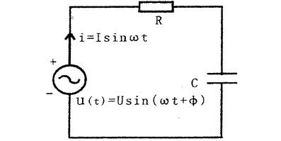
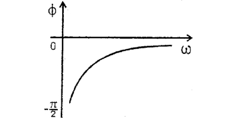
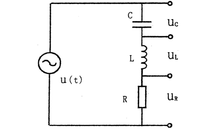
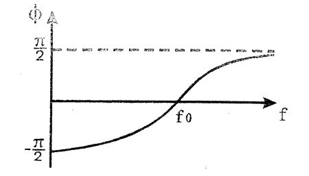
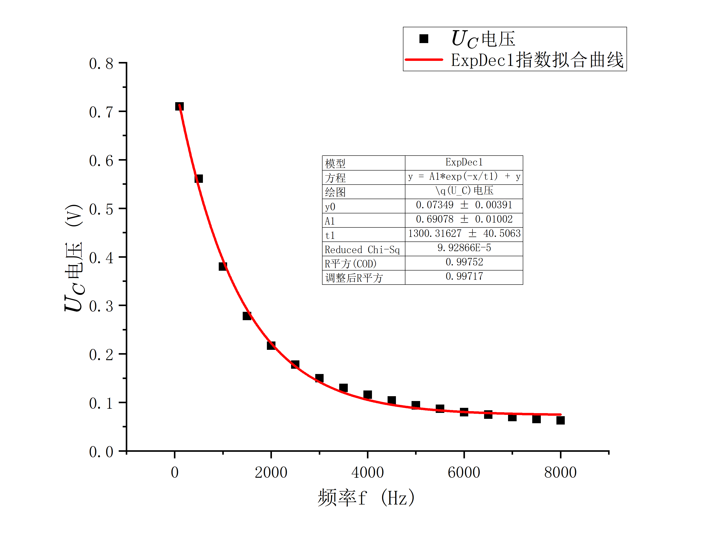

RLC串联电路暂态、稳态过程的研究¶
2024/10/23
一、实验综述¶
1、实验目的¶
1、观察RC和RL串联电路的幅频特性和相频特性；
2、了解RLC串联电路的幅频特性；
3、了解RLC电路的串联谐振现象及RLC回路\(Q\)值的物理意义;
4、观察RLC电路的暂态过程。
2、实验原理¶
-
RC串联电路的稳态特性
在图1所示电路中，电阻\(R\)，电容\(C\)的电压有以下关系式：
\(I=\frac{U}{\sqrt{R^2+(\frac1{\omega C})^2}}\)
$U_R=IR $
\(U_c=\frac{1}{\omega C}\)
\(\phi=-arctan\frac{1}{\omega CR}\)
图1 RC串联电路
其中\(ω\)为交流电源的角频率，\(U\)为交流U电源的电压有效值，\(\phi\)为电流和电源电压的相位差，它与角频率\(ω\)的关系见图2可见当\(ω\)增加时，\(I\)和\(U_R\)增加，而\(U_C\)减小。当\(ω\)很小时\(ϕ→-π/2\)，\(ω\)很大时\(ϕ→0\)。
图2 RC串联电路的相频特性 2. RL串联电路稳态特性
RL串联电路如图3所示，电路中\(I\)、\(U\)、\(U_R\)、\(U_L\)有以下关系：
\(I=\frac{U}{\sqrt{R^2}+(\omega L)^2}\)
\(U_R=IR,U_L=I\omega L\)
\(\phi=arctan \frac{\omega L}R\)
可见RL电路的幅频特性与RC电路相反U_R，RC\(\omega\)增加时，\(I\)、\(U_R\)减小而\(U_L\)增大。它的相频特性见图4，由图4可知，\(ω\)很小时\(ϕ→0\)，\(ω\)很大时\(ϕ→π/2\) 3. RLC串联电路的稳态特性
在电路中如果同时存在电感和电容元件，那么在一定条件下会产生某种特殊状态，能量会在电容和电感元件中产生交换，我们称之为谐振现象，RLC电路如图5所示。
如图5所示电路，则阻抗\(|Z|\)，电压\(U\)、\(U_R\)和电流\(i\)之间有以下关系：
\(|Z|=\sqrt{R^2+(\omega L-\frac1{\omega C})^2}\)
\(\phi =arctan\frac{\omega L-\frac1{\omega C}}{R}\)
\(i=\frac{U}{\sqrt{R^2+(\omega L-\frac 1{\omega C})^2}}\)
其中\(\omega\)为角频率，上述各物理量与频率的关系称为频响特性。
图5 RLC串联电路
图6为RLC串联电路幅频特性，由图6可知，在频率\(f_0\)处阻抗\(Z\)值最小，且此时整个电路呈纯电阻性，电流\(i\)达到最大值，我们称\(f_0\)为RLC串联电路的谐振f_2频率(\(ω\)\(0\)为谐振角频率)，在\(f_1\)至\(f_2\)的频率范围内\(i\)值较大，我们称为通频带；RLC串联电路的相频特性如图7所示。
当\(\omega=\omega_0=\frac{1}{\sqrt{LC}}\)时，\(f_0=\frac{1}{2\pi\sqrt{LC}}\)，由上述三式可知：\(|Z|=R\),\(\phi=0\)\,\(i_m=\frac{U}{R}\)，此时电路呈纯电阻性，而在电感和电容上的电压相等，相位相反，且为电源电压的\(Q\)倍。\(Q\)称为电路的品质因素，简称\(Q\)值。
定义：\(U_C\)或\(U_L\)与\(U\)的比值为品质因数\(Q\)，\(Q=\frac{U_L}{U}=\frac{U_C}{U}=\frac{\omega_0 L}{R}=\frac1{R\omega_0C}\)
可以证明\(\Delta f=\frac{f_0}{Q}\)\,\(Q=\frac {f_0}{\Delta f}\)
 图6 RLC串联电路幅频特性
图6 RLC串联电路幅频特性图7 RLC串联电路的相频特性 4. RLC串联电路的暂态过程
在图8示的电路中，先将K打向“1”，待稳定后再将K打向“2”，这称为RLC串联电路的放电过程，其电路方程为
\(LC\frac{d^2 U_C}{dt^2}+RC\frac{dU_C}{dt}+U_c=0\)
 图8
图8初始条件为\(t=0\)，\(U_C=E\),\(\frac{dU_C}{dt}=0\)，这样方程的解一般按\(R\)值的大小可分为三种情况:
-
\(R<2\sqrt{L/C}\),为欠阻尼
\(U_C=\frac{1}{\sqrt{1-\frac{C}{4L}\cdot R^2}}\cdot E\cdot e^{-\frac t \tau}\cdot cos(\omega t+\phi)\)
其中\(\tau=\frac{2L}{R}\)，\(\omega=\frac{1}{\sqrt{LC}}\sqrt{1-\frac{C}{4L}\cdot R^2}\) 2. \(R>2\sqrt{L/C}\),为过阻尼
\(U_C=\frac{1}{\sqrt{\frac{C}{4L}\cdot R^2-1}}\cdot E\cdot e^{-\frac t \tau}\cdot sh(\omega t+\phi)\) 3. \(R=2\sqrt{L/C}\)，为临界阻尼
\(U_C=(1+\frac{t}{\tau})E\cdot e^{-\frac{t}{\tau}}\)
-
图9这三种情况下的\(U_C\)变化曲线，其中1为欠阻尼，2为过阻尼，3为临界阻尼。
 图9 放电时的UC曲线示意图
图9 放电时的UC曲线示意图
如果当\(R<<2\sqrt{L/C}\)时，则曲线1的振幅衰减很慢，能量的损耗较小。能够在\(L\)与\(C\)之间不断交换，可近似为\(LC\)电路的自由振荡，这时\(\omega\approx\frac{1}{\sqrt{LC}}=\omega_0\)，\(\omega_0\)为\(R=0\)时LC回路的固有频率。对于充电过程，与放电过程相类似，只是初始条件和最后平衡的位置不同。
图10给出了充电时不同阻尼的\(U_C\)变化曲线图。
 图10 充电时的UC曲线示意图
图10 充电时的UC曲线示意图
二、实验内容¶
1、实验仪器¶
低频信号发生器XFD-7A；标准电阻；标准电容箱；标准电感箱；晶体管毫伏表DA-16；示波器。
2、实验步骤¶
-
RC串联电路的幅频特性：按图1连接电路，交流电源是低频信号发生器的输出端，输出电压始终保持在1V，R为十进电阻箱，取\(R=500\Omega\)，取\(C=0.47\mu F\)，首先将低频信号发生器频率调到\(100Hz\)，用晶体管毫伏表测量不同频率下电容、电阻两端的输出电压\(U_C\)，取一定间隔频率，一直测到\(8kHz\)（此过程中始终保持低频信号发生器输出电压为1V），表格自行设计。
-
RL串联电路的幅频特性：按图3接电路，交流电源是低频信号发生器的输出端，输出电压始终保持在1V，自行选择合理的电阻与电感值，同样取一定间隔频率，一直测到\(8kHz\)（此过程中始终保持低频信号发生器输出电压为1V），用晶体管毫伏表测量不同频率下电感、电阻两端的输出电压\(U_L\)，表格自行设计。
-
按图5连接电路，自行选择\(L\)、\(C\)、\(R\)，信号发生器输出电压保持在1V，用晶体管毫伏表测量R两端的电压（用于计算回路电流），计算所选实验参数下的谐振频率\(f_0\)，信号发生器频率以每次间隔\(100Hz\)（在谐振频率\(f_0\)附近可增加测量点），在谐振频率\(f_0\)附近测量LRC电路的幅频特性(自行设计选择合理的频率范围)。表格自行设计。
-
自行设计电路，取合适的R、L及C值，用示波器观察RLC串联电路的暂态过程。
三、实验数据¶
1、实验数据记录¶
-
RC串联电路的幅频特性
频率\(f/Hz\) 100 500 1000 1500 2000 2500 3000 3500 4000 4500 5000 5500 6000 6500 7000 7500 8000 电压\(U_C/V\) 0.71 0.561 0.38 0.278 0.217 0.178 0.15 0.13 0.116 0.104 0.094 0.087 0.08 0.075 0.07 0.066 0.063 2. RL串联电路的幅频特性 频率\(f/Hz\) 100 500 1000 1500 2000 2500 3000 3500 4000 4500 5000 5500 6000 6500 7000 7500 8000 电压\(U_L/V\) 0.115 0.341 0.521 0.606 0.647 0.669 0.683 0.692 0.697 0.702 0.705 0.707 0.709 0.71 0.711 0.712 0.713 3. LRC电路的幅频特性 频率\(f/Hz\) 100 200 300 400 500 600 700 800 900 1000 1100 1200 电压\(U_R/V\) 0.106 0.215 0.321 0.421 0.504 0.561 0.586 0.583 0.561 0.531 0.498 0.465 取定频率\(600-700Hz\)为频率峰值区间，以\(20Hz\)为间隔进一步测量。
频率\(f/Hz\) 600 620 640 660 680 700 720 730 740 760 780 800 电压\(U_R/V\) 0.561 0.568 0.575 0.580 0.583 0.586 0.587 0.587 0.587 0.586 0.585 0.583 得到峰值\(f_0=730Hz\) 4. RLC串联电路的暂态过程
\(L/H\) \(C/\mu F\) \(R/\Omega\) 状态 0.1 1 1000 过阻尼 0.1 0.47 100 欠阻尼 0.1 0.47 900 临界阻尼 -
过阻尼状态图

-
欠阻尼状态图
 3. 临界阻尼状态图
3. 临界阻尼状态图
-
2、实验数据处理¶
-
RC串联电路的幅频特性

图像符合推导出的理论模型\(U_C=\frac{U_{in}}{\sqrt{1+(2\pi fRC)^2}}\cdot\frac{1}{2\pi fC}\)即在频率增加时，电容两端的电压 \(U_C\) 会逐渐减小，最终趋近于0。 2. RL串联电路的幅频特性

图像符合推导出的理论模型\(U_L=\frac{U_{in}\cdot(2\pi fL)}{\sqrt{R^2+(2\pi fL)^2}}\)即在频率增加时，电容两端的电压 \(U_L\) 会逐渐增大，最终在高频段趋近于输入电压\(U_{in}\)。 3. LRC串联电路的幅频特性
理论谐振频率\(f_0'=\frac{1}{2\pi\sqrt{LC}}=734.13Hz\),相对误差\(\varepsilon=\frac{|f_0'-f_0|}{f_0'}=0.56216\%\),误差较小证明测量结果准确 4. RLC串联电路的暂态特性
采用的实验数据，欠阻尼状态与过阻尼状态$R,L,C \(关系与理论相一致，即分别满足\)R<2\sqrt{\frac{L}{C}}\(和\)R>2\sqrt{\frac{L}{C}}$
对于临界阻尼状态，理论电阻\(R_0=2\sqrt{\frac{L}{C}}=922.5\Omega\)，相对误差\(\varepsilon =\frac{|R_0-R|}{R_0}=2.442\%\)，在误差允许范围内 5. 误差分析
- 实验采用的测量仪器如电压表，可变电阻由于最小刻度存在系统误差；
- 实验分析RLC串联电路的暂态过程中，在调节电阻\(R\)的过程中通过肉眼判断区分三种阻尼状态存在一定误差，尤其是欠阻尼与临界阻尼状态；
- 实验产生的正弦波与方波电压受环境影响不够稳定，同时受上升下降沿影响导致测量结果落在一定范围内波动，存在偶然误差；
- 接线元件引入额外的阻抗会影响测量结果。
四、实验拓展¶
-
为什么串联谐振称为电压谐振而并联谐振称为电流谐振？
在串联谐振电路中，电感和电容串联连接。当频率达到谐振频率时，电感的反应和电容的反应相互抵消，电路的总阻抗达到最小值。这时，电流达到最大值，整个电路的电压在谐振点上会增大（特别是在电感和电容两端）。强调电压的增大，所以称为电压谐振。而在并联谐振电路中，电感和电容并联连接。当频率达到谐振频率时，电流在电感和电容两端的相位相反，导致总电流最小化；而在谐振点，流过电容和电感的电流会相互抵消，电流特性更为显著，因此被称为电流谐振。 2. 在RLC电路中，若方波发生器的频率很高或很低，能观察到阻尼振荡的波形吗？如何由阻尼振荡的波形来测量RLC电路的振荡周期\(T\)？振荡周期\(T\)与角频率\(\omega\)的关系会因方波频率的变化而发生变化吗？
不能，当方波频率很高时，RLC电路可能无法完全响应每个方波周期的变化，因此可能无法清晰地观察到阻尼振荡的波形，而当方波频率过低，电路可能会在方波的上升沿和下降沿之间出现较长的时间延迟，导致无法观察到连续的振荡效果，可能只会看到缓慢的上升和下降，没有明显的振荡特征。
观察阻尼振荡的波形，测量从一个波峰（或波谷）到下一个波峰（或波谷）的时间间隔，这个时间间隔就是振荡周期 \(T\)。
振荡周期 \(T\)与角频率 \(\omega\)的关系由电容\(C\)和电感\(L\)共同决定不随方波频率变化而变化。 3. RC串联电路中\(\tau\)的物理意义。
在RC串联电路中，时间常数\(\tau = R \cdot C\)，是电路响应时间的一个重要参数，反映了电路对变化的响应速度。时间常数越大，电容充放电所需的时间就越长，电路对电压变化的响应就越慢；反之则越快。 4. 举一个实际生活中的RLC电路的应用实验，叙述RLC电路的作用。
以收音机为例，收音机中的调谐电路通常由电感\(L\)和可调电容\(C\)构成RLC电路。对于特定频率的无线电信号，电路通过调整电容的值，使电路的谐振频率（\(f_0 = \frac{1}{2\pi\sqrt{LC}}\)）与所需接收的广播频率匹配，当共振频率与信号频率一致时，电路能够有效地增强该频率的信号。